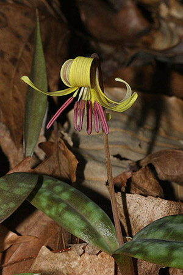

Previous || Next || Return to Mystery Plants || USC Herbarium
This Week's Mystery Plant | Dr. John B. Nelson Curator, USC Herbarium |
|
Spring is finally here, and this wildflower is proof. It is one of the earliest blooming woodland species we have. This is a perennial, North American member of the lily family, and it belongs to a group (a genus) of about 25 species. All of them have a deeply buried, slender bulb. Each mature plant produces two leaves, and these are strongly mottled in our mystery plant. A slender flower stalk bears a single flower, and there are six parts of the yellow perianth, that is, three sepals and three petals. A single flower dangles from the end of its stalk. Within the flower are six stamens, and these are generally reddish or purplish. After blooming, a plump seed pod is produced. While it is developing, this seed pod becomes heavier, and eventually rests directly on the ground, ultimately splitting open and letting the seeds out. You can find this species widely from West Virginia and Maryland down to Alabama, and just barely into northern Florida. In South Carolina it is most commonly seen in the piedmont and mountain counties. It is frequently seen in patches in rich woods, often along creek banks, well before the trees above them have unfolded their leaves. The plants don't stay above the ground very long after they have produced their fruits and seeds: by summer time, all the plants have disappeared. This early spring-blooming "strategy" makes sense, because when the leaves on the trees are fully expanded, there is much less available light on the forest floor. Seedlings or young plants tend to have only one leaf, and these young plants typically don't bloom. If you find a patch of this splendid wildflower, try to resist the temptation of digging some up for your garden. The bulbs tend to be very deep. Besides, you can find it in the catalogs. |
 Photo by Jerry Bright |